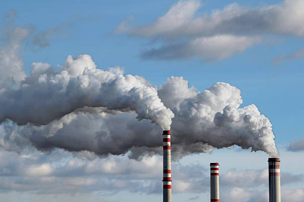

ENVIRONMENTAL HAZARDS
Environmental hazards are dangers or risks present in the environment that can cause harm to humans, animals, plants, and property. They can result from natural events or human activities. Environmental hazards may lead to injury, disease, death, or environmental degradation.

TYPES OF ENVIRONMENTAL HAZARDS
1. Physical Hazards
Physical hazards are natural events that can cause harm to living things. Examples include:
- Earthquakes
- Floods
- Volcanic eruptions
- Tornadoes
- Drought
- Landslides
2. Chemical Hazards
Chemical hazards are harmful substances in the environment that can cause poisoning or health problems. Examples include:
- Pesticides and herbicides
- Industrial chemicals and waste
- Acid rain
- Toxic gases from factories or vehicles
3. Biological Hazards
Biological hazards come from living organisms or their by-products that can cause diseases. Examples include:
- Viruses (e.g., COVID-19, influenza)
- Bacteria (e.g., cholera, typhoid)
- Parasites (e.g., malaria, worms)
- Fungi and molds
4. Socio-Economic or Man-Made Hazards
Man-made hazards are caused by human activities. Examples include:
- Deforestation
- Industrial pollution
- Poor waste disposal
- Air and water pollution
- Road accidents
- Noise pollution
SPECIFIC ENVIRONMENTAL HAZARDS
A. Soil Erosion
Definition: Soil erosion is the removal of the top layer of soil by wind, water, or human activities. It reduces soil fertility and affects plant growth.
Causes:
- Heavy rainfall washing away soil
- Strong winds blowing loose soil
- Deforestation removing tree cover
- Overgrazing by livestock
- Poor farming practices
Control Measures:
- Planting trees and grasses to hold the soil
- Constructing terraces on slopes
- Practicing crop rotation and contour farming
- Preventing overgrazing
B. Flooding
Drainage Patterns: Flooding occurs in areas with poor drainage, low-lying regions, or rivers that overflow during heavy rainfall.
Causes:
- Heavy and prolonged rainfall
- Poor drainage systems
- Deforestation
- Siltation of rivers
- Climate change and rising sea levels
Prevention:
- Build proper drainage channels
- Plant trees to reduce surface runoff
- Avoid building houses on flood plains
- Dredge rivers and waterways regularly
Effects on Community and Farmland:
- Loss of lives and livestock
- Destruction of homes and property
- Damage to farmland and crops
- Spread of water-borne diseases
- Displacement of communities
C. Bush Burning
Practices that Influence Bush Burning:
- Clearing farmland
- Hunting practices
- Cultural or traditional activities
- Careless disposal of fire
Effects of Bush Burning:
- Loss of vegetation and wildlife habitats
- Soil degradation
- Air pollution and respiratory problems
- Increased risk of wildfires
- Contribution to climate change
Regulation:
- Laws prohibit indiscriminate bush burning
- Fines and penalties for offenders
- Community education on controlled burning
D. Deforestation
Reasons:
- Clearing land for agriculture
- Logging for timber and fuel wood
- Urbanization and industrial development
- Construction of roads and settlements
Effects on the Environment:
- Loss of biodiversity
- Soil erosion and flooding
- Climate change and reduced rainfall
- Desertification in some areas
Regulation:
- Forest protection laws
- Establishment of forest reserves and national parks
- Tree planting campaigns
E. Desertification
Definition: Desertification is the process by which fertile land becomes desert due to human activities and climate change.
Areas Affected:
- Northern Nigeria (Sahel region)
- Arid and semi-arid regions with low rainfall
Causes:
- Deforestation
- Overgrazing by livestock
- Poor farming methods
- Prolonged droughts
Control Measures:
- Plant trees and vegetation
- Practice sustainable farming
- Control overgrazing
- Build terraces and other soil conservation structures
- Educate communities on protecting land
CAUSES OF ENVIRONMENTAL HAZARDS
Natural Causes: Earthquakes, floods, landslides, droughts, storms, volcanic eruptions
Human Causes:
- Industrialization and pollution
- Deforestation and habitat destruction
- Poor waste disposal
- Overcrowding and poor sanitation
- Mining and oil exploration
EFFECTS OF ENVIRONMENTAL HAZARDS
Health Effects:
- Diseases (cholera, malaria, respiratory infections)
- Injuries from accidents or natural events
- Poisoning from chemicals and pollutants
Environmental Effects:
- Deforestation and loss of vegetation
- Soil erosion and desertification
- Water pollution and depletion
- Air pollution causing smog and acid rain
Socio-Economic Effects:
- Loss of lives and property
- Destruction of farms and food shortage
- Displacement of communities
- Economic loss from damaged infrastructure
PREVENTION AND CONTROL OF ENVIRONMENTAL HAZARDS
- Maintain environmental hygiene
- Plant trees and protect forests
- Control industrial pollution
- Use protective measures when handling chemicals
- Prepare for natural disasters
- Educate communities about hazards and safe practices
SUMMARY
Environmental hazards are dangers in the environment that can harm living things and cause property damage. They include physical, chemical, biological, and man-made hazards. Common hazards in Nigeria include soil erosion, flooding, bush burning, deforestation, and desertification. They have serious health, environmental, and socio-economic effects. Prevention involves proper hygiene, tree planting, sustainable farming, disaster preparedness, pollution control, and public education.